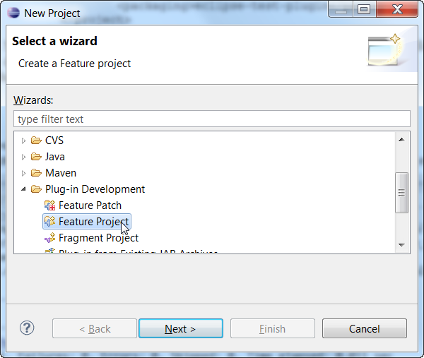
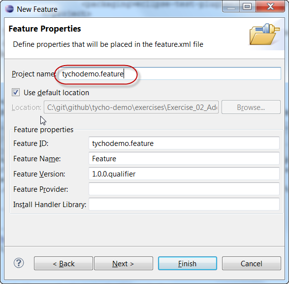
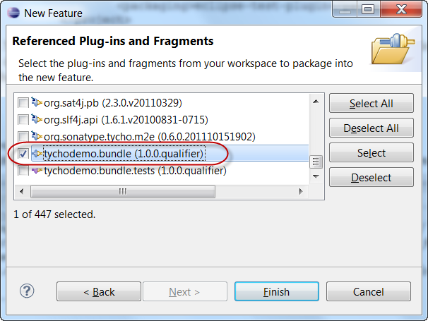
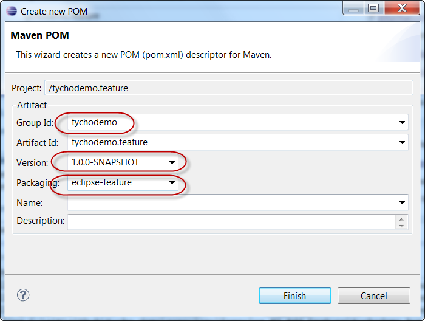
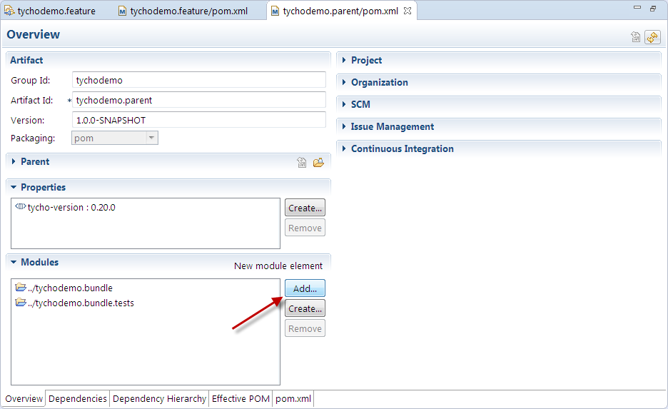
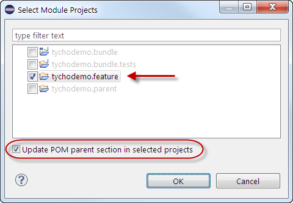
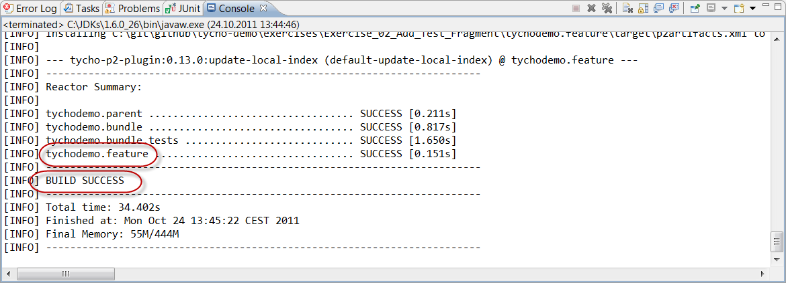

<Previous Exercise
| TOC
| Next Exercise>
Exercise 3: Add a feature
In this exercise, we'll create a feature which groups the plugin(s) we build to units which should be installed together.
Recovery option
This section is optional and only needed if you want to recover from a problem in exercise 2.
Adding a feature
- Create a new feature project tychodemo.feature which includes the tychodemo.bundle plugin:
- File > New > Other > Plug-in Development > Feature Project

- Enter the project name tychodemo.feature and the feature name Tycho Demo Feature

- Press Next > and select the tychodemo.bundle

Note: A feature only logically includes plugins; the feature artifact won't actually contain the JARs of its "included" plugins.
- Convert the feature project to a Maven project:
- Right-click tychodemo.feature > Configure > Convert to Maven Project
- Enter the groupId tychodemo, the version 1.0.0-SNAPSHOT and the packaging eclipse-feature

Note: Tycho requires that the artifactId in the POM is the same as the feature ID, and that the versions match (with .qualifier replaced by -SNAPSHOT)
- Add the feature project as a module to the reactor, and configure the feature project's parent POM:
- Open the pom.xml of tychodemo.parent and click on Add... in the Modules section

- Select tychodemo.feature and Update POM parent section in selected projects

- In case you get the error "Project configuration is not up to date",
right-click on tychodemo.feature > Maven > Update Project..., select the project and click OK
- Trigger a build on the parent POM, e.g. by right-clicking on tychodemo.parent > Run As > Maven build
Expected result:
- BUILD SUCCESS
- The reactor builds four modules, including the tychodemo.feature project

<Previous Exercise
| TOC
| Next Exercise>